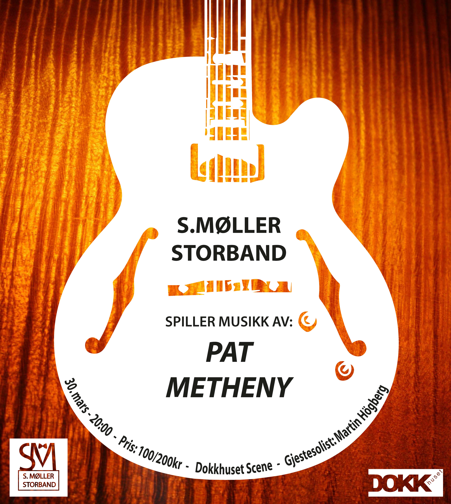
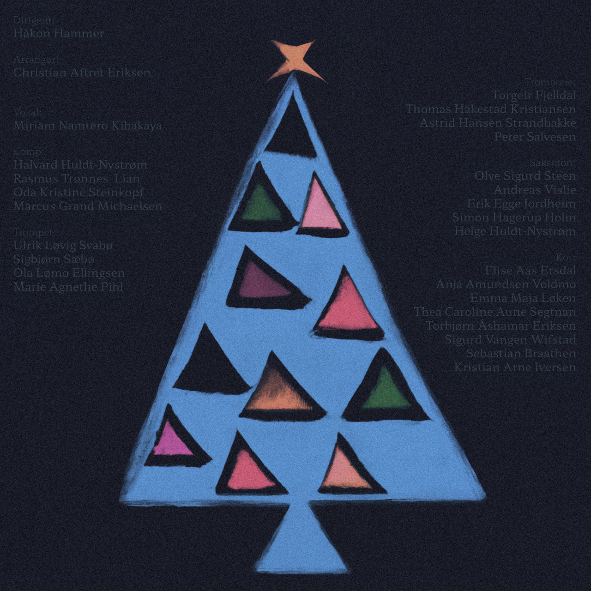

S. Møller Stordand
Musikalsk verv på Samfundet
2016 ->
S. Møller Storband er et av to storband fra Studentersamfundet i Trondheim. Jeg har vært medlem siden
2016
og spiller sax og klarinett. (Her fra en solo under Disney-konsert i 2019). Som bandets
designer, har jeg utformet bandlogoen og gjort en rekke andre grafiske greier.

Logo:
Et storband består av saxer, trompeter, tromboner, bass, gitar, piano og slagverk.
Med andre ord er det mye man kan «spille» på når man skal lage en logo.
S. Møller er kjent for å ha en profesjonell og seriøs tilnærming til alle oppdrag,
noe som måtte gjenspeiles i logoen.

Resultatet ble en ren og leken logo med assosiasjon til et dansepar, hvor den kvinnelige S-en slynger
et ben rundt den maskuline M-en i dress. Sløyfen står sentralt som et symbol for profesjonalitet og
pålitelighet samtidig som den er assosiert med salskapslyst av høy klasse.
Jeg designet også hjemmesiden til det
prestisjefylte bandet.
Henning Bang Halvorsen sto for kodingen og gjorde en meget presis jobb.
Formålet var å lage en attraktiv side som ikke krevde kontinuerlig oppdatering.

I mars 2017 hadde bandet et prosjekt hvor vi spilte låter av den kjente jazz-gitaristen Pat Metheny,
arrangert for storband. I den anledningen lage jeg konsertplakaten. Jeg brukte Methenys karakteristiske
gitar som hovedmotiv.
Beats and Big Band var et stort samarbeidsprosjekt mellom komponist Christian Aftret Eriksen,
Artist og DJ Egil Reistadbakk
og vår eminente dirigent Håkon Hammer i anledning
UKA 2017.
Det fylte Storsalen på Studentersamfundet den gangen og har blitt vist to ganger til på Jazzfest i
Trondheim. I tillegg spilte vi inn fire av låtene på plate, som ligger ute på spotify.

I 2022 spilte vi inn plate med nordiske julesanger i storbanddrakt. Igjen var det Christian Eriksen som
arrangerte.
Jeg brukte DALL-E 2 til inspirasjon for covermotivet.
Vi spilte julekonsert sammen med Knauskoret på
Byscenen samme året. Igjen brukte jeg DALL-E 2 til å
lage konsertplakaten.

Storbandet spiller ofte opp til dans på arrangement og konferanser. I slike anledninger er det fint å
legge igjen et visittkort som kan føre til nye dansejobber. Den sorte logoen blir fremhevet med
glanstrykk mot det matte lilla kortet. Den grafiske illustrasjonen på baksiden spiller på det enkle og
lekne uttrykket til logoen.